The Twilight
"Twilight," directed by Catherine Hardwicke and based on the novel by Stephenie Meyer, is a romantic fantasy film that launched a massive cultural phenomenon. The story revolves around the burgeoning relationship between Bella Swan, a human teenager, and Edward Cullen, a centuries-old vampire. The film explores themes of love, identity, and the challenges of forbidden relationships, all set against a backdrop of supernatural intrigue. Some call it a forbidden love 🥀💔.
Major Scenario: The Tracker James and His Coven
^ The Chase Begins: James, a tracker vampire, becomes intrigued by Bella because her blood smells particularly appealing to him, and more importantly, because Edward is so protective of her. He sees her as a challenge and a game.
^ The Trap: James uses Bella's love for her mother against her, luring her away from the Cullens by calling and pretending to be her mother who is in danger. Bella goes to Phoenix, Arizona, to save her.
^ The Showdown: In a ballet studio, James attacks Bella. He bites her wrist, beginning the transformation process. Edward and the other Cullens arrive to save her. Edward fights and kills James, and Carlisle removes the venom from Bella's wrist, preventing her from turning into a vampire.
^ The Aftermath: Bella is severely injured and recovering, but the experience solidifies her love for Edward and her understanding of the dangers of being with him.
Minor Scenarios
# The Van Incident: Early in the film, Bella almost gets hit by a van in the school parking lot. Edward uses his vampire speed to push her out of the way, revealing his supernatural abilities to her. This incident sparks Bella's curiosity and begins her investigation into Edward's true nature.
# The Restaurant Attack: When Bella and Edward go on their first date to a restaurant in Port Angeles, they are accosted by a group of men. Edward uses his intimidating presence to scare them away, protecting Bella from potential harm.
# The Baseball Game: During a Cullen family baseball game, a nomadic coven of vampires (James, Laurent, and Victoria) stumbles upon them. The game's loud sounds attract their attention, and it becomes clear that James is interested in Bella. This encounter sets the stage for the major conflict.
! Laurent's Warning: After James decides to hunt Bella, Laurent, a member of James' coven, feels conflicted and warns Bella about James's tracking abilities. He advises her to leave Forks to protect herself.
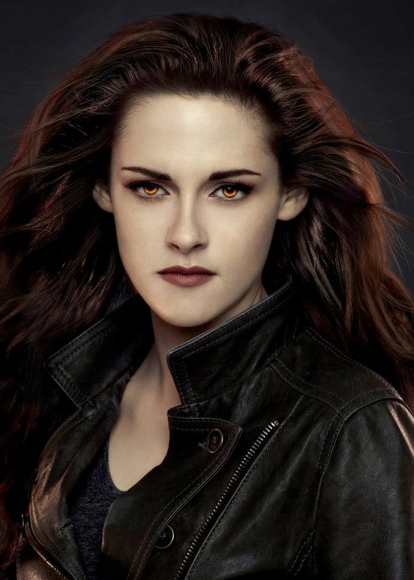
• Bella Swan (Kristen Stewart)
- Role: The protagonist, a shy and introverted teenager who moves to Forks, Washington, to live with her father.
- Backstory: Bella is portrayed as an outsider, never quite fitting in. She's drawn to the supernatural world and possesses a unique immunity to vampire mind control.
- Origin: Bella represents the human perspective in a world of vampires and werewolves.
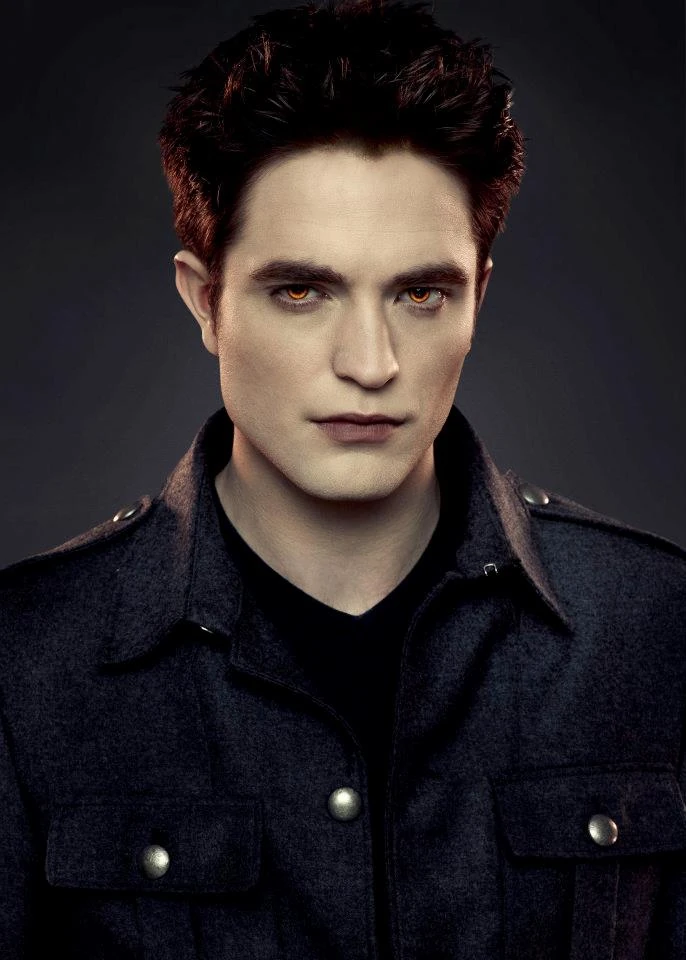
• Edward Cullen (Robert Pattinson)
- Role: A vampire who is over 100 years old but appears as a teenager. He falls in love with Bella, despite the danger their relationship poses.
- Backstory: Edward was turned into a vampire in 1918 by Carlisle Cullen to save him from dying during the Spanish influenza. He possesses the ability to read minds (except Bella's).
- Origin: Edward is part of the Cullen family, a group of "vegetarian" vampires who abstain from drinking human blood.
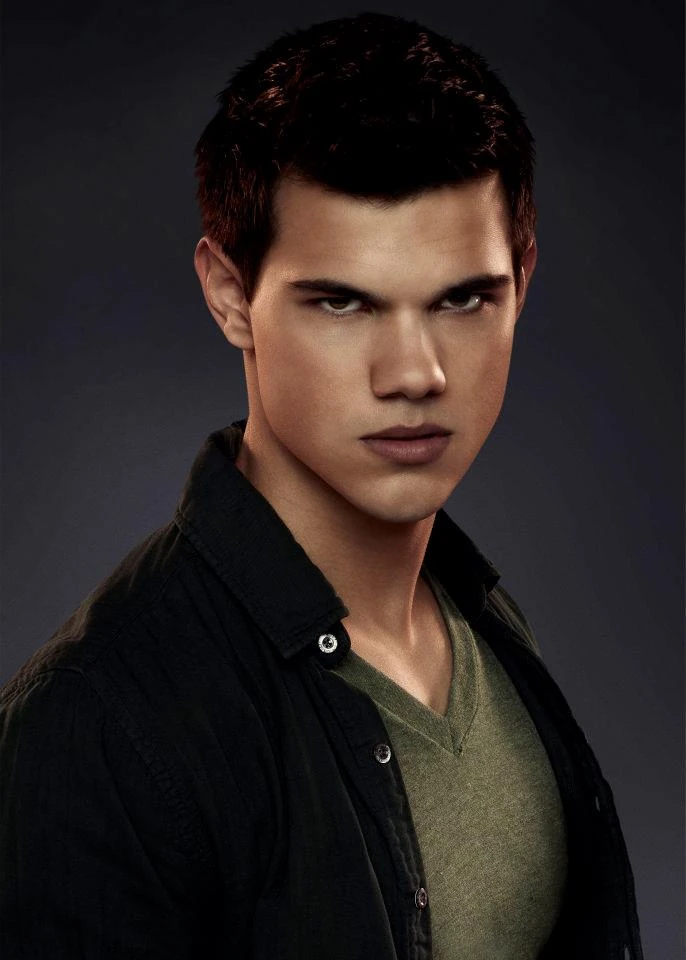
• Jacob Black (Taylor Lautner)
- Role: A Quileute Native American and Bella's childhood friend. He later transforms into a werewolf.
- Backstory: Jacob is part of a tribe with a long history of transforming into werewolves to protect their land from vampires.
- Origin: Jacob represents a connection to the natural world and a rival love interest for Bella.
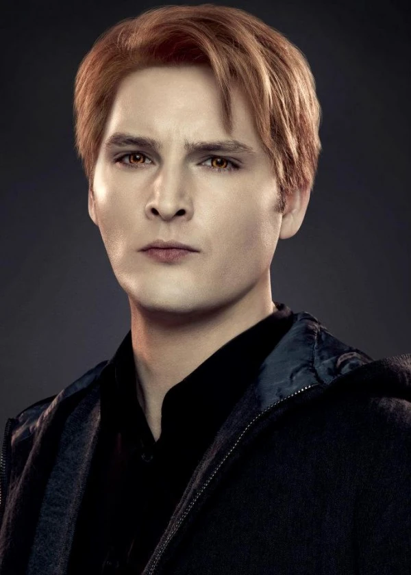
• Carlisle Cullen (Peter Facinelli)
- Role: The patriarch of the Cullen family, a compassionate and ethical vampire who works as a doctor.
- Backstory: Carlisle was turned into a vampire centuries ago and developed a moral code against feeding on humans.
- Origin: Carlisle is the founder of the Cullen family, turning each member to save them from death.
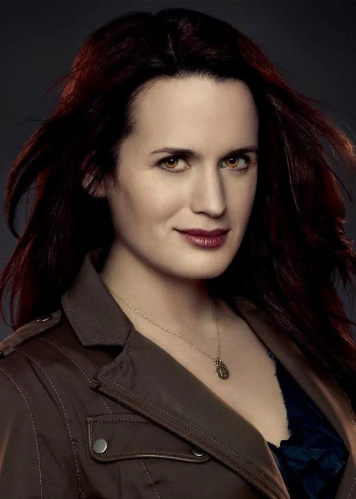
• Esme Cullen (Elizabeth Reaser)
- Role: Carlisle's wife and the maternal figure in the Cullen family.
- Backstory: Esme was turned into a vampire by Carlisle after a suicide attempt following the death of her child.
- Origin: Esme provides emotional support and a sense of family within the Cullen household.

• Rosalie Hale (Nikki Reed)
- Role: A beautiful but often aloof vampire who is protective of her family.
- Backstory: Rosalie was turned into a vampire after being assaulted and left for dead by her fiancé and his friends.
- Origin: Rosalie struggles with her vampire existence and longs for the human life she lost.

• Emmett Cullen (Kellan Lutz)
- Role: Rosalie's mate, known for his strength and jovial personality.
- Backstory: Emmett was saved by Rosalie after being attacked by a bear and subsequently turned into a vampire by Carlisle.
- Origin: Emmett is a loyal and protective member of the Cullen family.
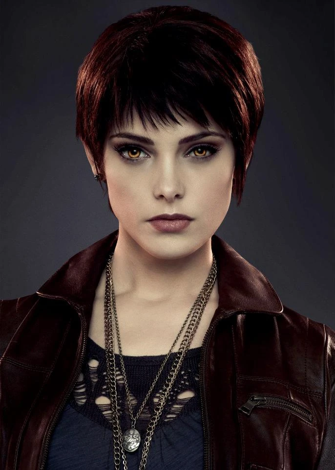
• Alice Cullen (Ashley Greene)
- Role: A cheerful and optimistic vampire with the ability to see the future.
- Backstory: Alice was turned into a vampire before she could be committed to an asylum due to her visions.
- Origin: Alice's visions help the Cullens anticipate and avoid danger.
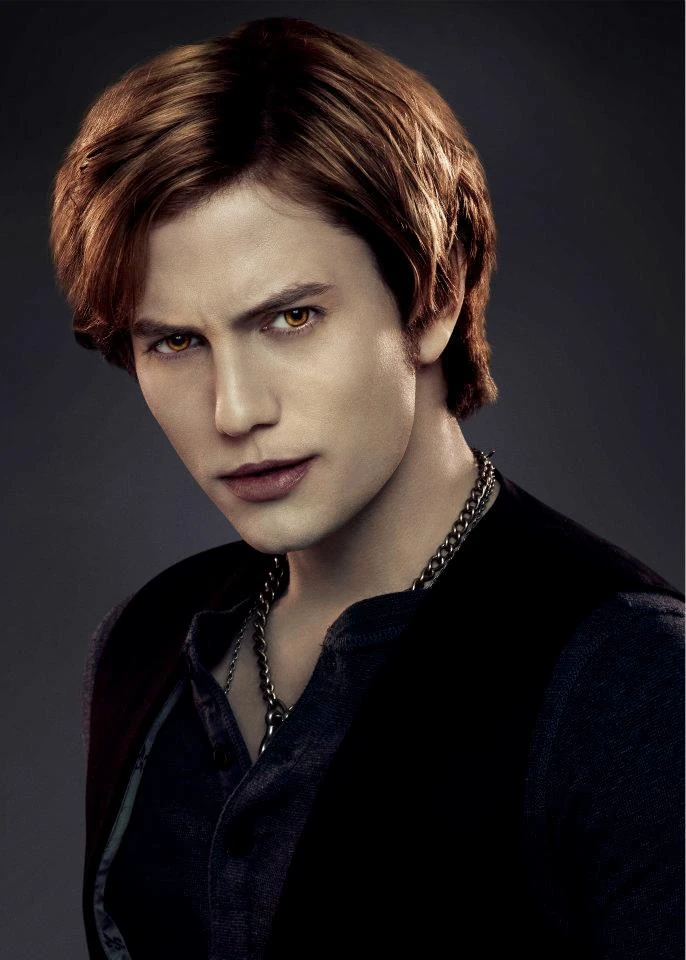
• Jasper Hale (Jackson Rathbone)
- Role: Alice's mate, a vampire with the ability to manipulate emotions.
- Backstory: Jasper was a soldier in the Confederate Army before being turned into a vampire. He struggles with controlling his thirst for human blood.
- Origin: Jasper's ability to sense and manipulate emotions adds complexity to the Cullen family dynamic.
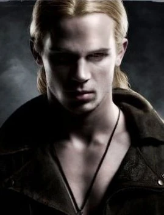
• James (Cam Gigandet)
- Role: The primary antagonist, a tracker vampire who hunts humans for sport.
- Backstory: James is a ruthless and skilled hunter, posing a significant threat to Bella.
- Origin: James represents the danger and violence inherent in the vampire world.
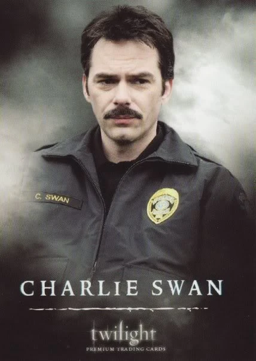
• Charlie Swan (Billy Burke)
- Role: Bella's father and the Chief of Police in Forks.
- Backstory: Charlie is a caring, if somewhat awkward, father who is happy to have Bella living with him. He is generally oblivious to the supernatural events occurring around him.
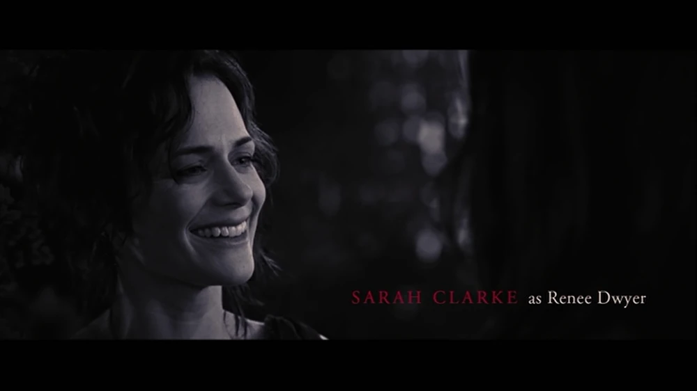
• Renée Dwyer (Sarah Clarke)
- Role: Bella's mother, who lives in Phoenix, Arizona.
- Backstory: Renée is free-spirited and supportive of her daughter's decisions.
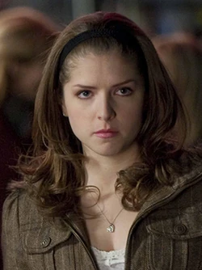
• Jessica Stanley (Anna Kendrick)
- Role: One of Bella's classmates and friends in Forks.
- Backstory: Jessica is interested in boys and social status. She is initially friendly to Bella but becomes jealous of Bella's relationship with Edward.
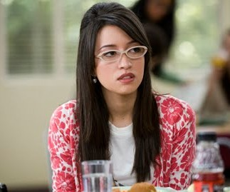
• Angela Weber (Christian Serratos)
- Role: Another of Bella's classmates and friends.
- Backstory: Angela is kind, quiet, and supportive. She is less concerned with social status than Jessica and provides a more genuine friendship to Bella.
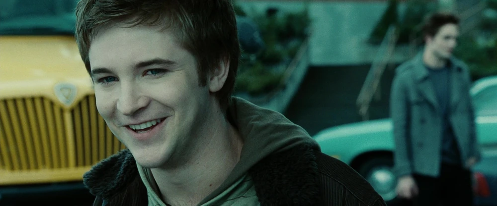
• Mike Newton (Michael Welch)
- Role: A classmate who is infatuated with Bella.
- Backstory: Mike is persistent in his attempts to win Bella's affection, but she consistently turns him down.
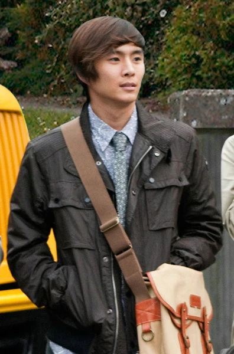
• Eric Yorkie (Justin Chon)
- Role: Another classmate and friend of Bella.
- Backstory: Eric is intelligent and eager to help Bella adjust to life in Forks.
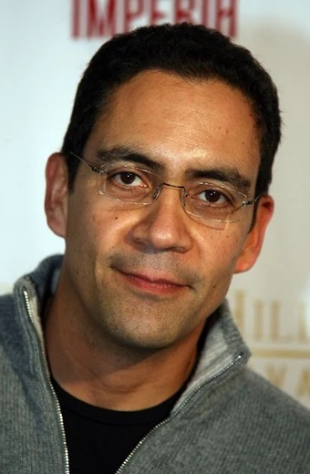
• Mr. Molina (José Zúñiga)
- Role: Bella's biology teacher.
- Backstory: He is the teacher during Bella and Edward's first encounter in biology class, where Edward is visibly disturbed by Bella's scent.
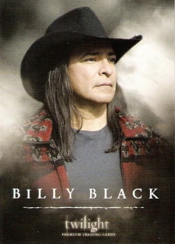
• Billy Black (Gil Birmingham)
- Role: Jacob's father and a friend of Charlie Swan.
- Backstory: Billy is a Quileute elder who knows about the legends of the tribe and the existence of vampires. He is initially wary of the Cullens.
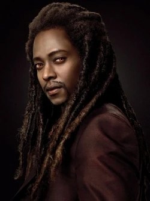
• Laurent (Edi Gathegi)
- Role: A member of James's vampire coven.
- Backstory: Laurent is more civilized than James and Victoria. He warns Bella about James's hunting abilities and later leaves the coven.
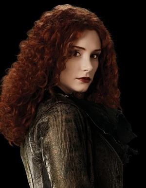